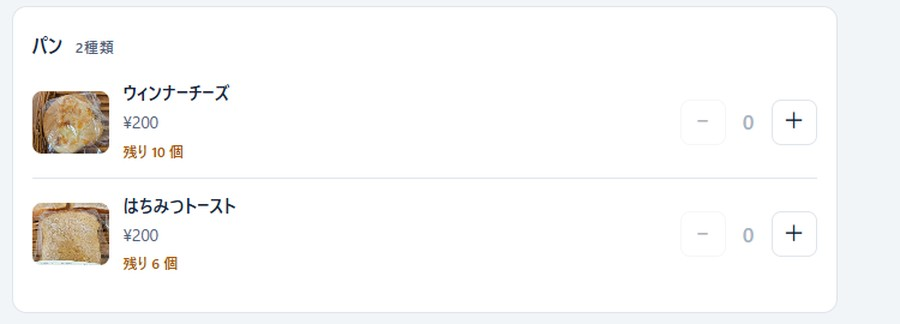
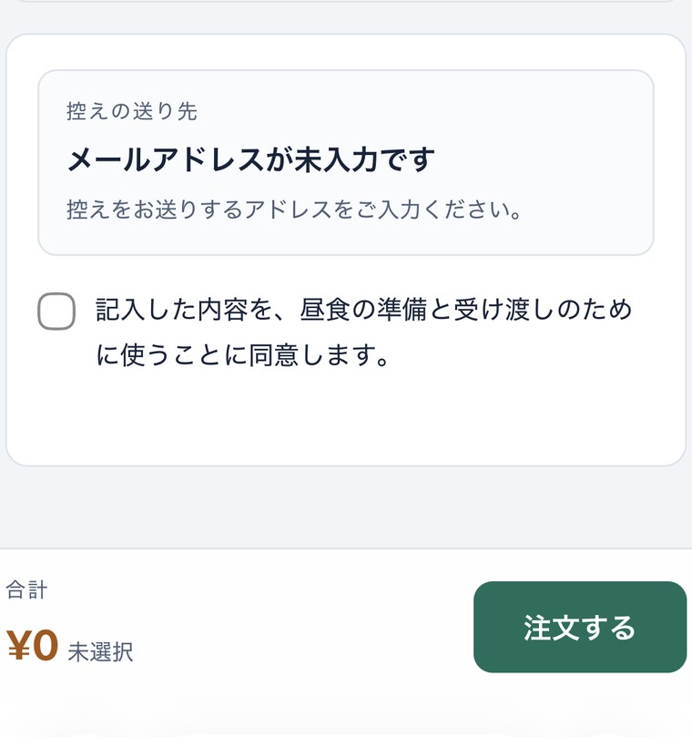
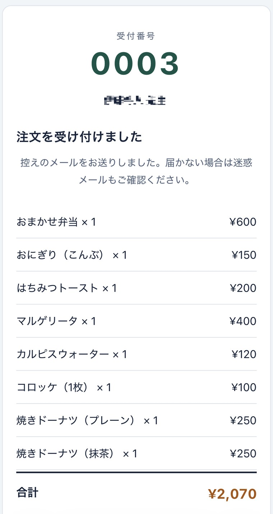
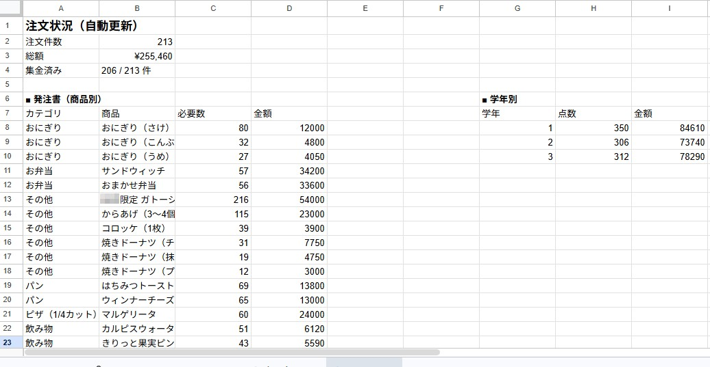
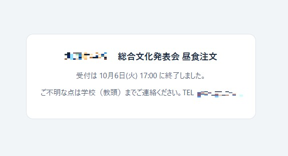

昨年つくったPTA主催の昼食注文システムを、今年作り直しました。総合文化発表会に向けたもので、受付期間を終えた時点で注文は213件、総額は25万円を超えています。
この記事では、何を変えたのか、なぜ変えたのか、そして運用してみてどうだったかを記録します。あわせて、昨年とは作り方そのものが変わった話も書きます。結論から言うと、昨年2日かかった開発が、今年は1時間かかりませんでした。
作り直した4つの理由
昨年のシステムも、きちんと動いてはいました。それでも作り直したのは、運用してみて見えてきたことが4つあったからです。
1 注文する側の操作性を上げたかった
これが第一の動機でした。昨年のものはGoogleフォームより格段によくなったとはいえ、スマートフォンで見たときの読みやすさ、押しやすさには、まだ改善の余地がありました。保護者の方が片手で操作することを考えると、画面の見やすさは機能そのものです。
2 個数制限のある商品があった
パンやピザなど、用意できる数に限りのある商品があります。昨年はその情報が注文画面に出ていなかったため、注文を受けてから調整する場面が生じました。今年は商品ごとに「残り◯個」を表示し、その場で分かるようにしました。

3 入力ミスを減らしたかった
控えのメールを送るしくみにしているので、メールアドレスが正しく入力されていないと控えが届きません。そこで注文を確定する前に、入力されたアドレスを画面に表示して確認してもらい、さらに同意のチェックボックスを置きました。送信までにワンクッション入れた形です。

4 注文の取り消しに手作業で対応していた
昨年、注文を取り消したいという連絡があり、スプレッドシートを直接開いて該当する行を手で消しました。件数が少なかったので対応できましたが、集計値との整合を自分で確認しなければならず、気を遣う作業でした。
今年は、受付番号を指定するとその注文だけを自動で取り消すしくみにしました。この受付番号は、注文が完了した時点で画面と控えのメールの両方に出ます。取り消しの連絡をいただくときも、この番号を伝えてもらうだけで済みます。

4つの改良
| 改良した点 | 解決したかったこと |
|---|---|
| 画面の見やすさ・操作性の向上 | スマートフォンでの注文のしやすさ |
| 商品ごとの残り個数表示 | 数量に限りのある商品の調整 |
| 送信前のアドレス確認＋同意チェック | 控えが届かない事態の防止 |
| 受付番号を指定しての注文取り消し | 手作業での行削除と整合確認 |
取り消し機能については、作ってもらったものに自分で手を入れました。受付番号を指定して注文を取り消したとき、注文の行が消えるだけでは足りません。商品ごとの必要数と、金額の集計も同時に更新されなければ、発注書の数字が合わなくなります。そこまで連動するように調整しました。

集計シートは注文が入るたびに自動で更新されます。商品別の必要数がそのまま発注書になり、学年別の点数と金額も同時に出ます。集金については、受け渡しの際に「済」と入力すると件数に反映されるようにしました。注文を受けて終わりではなく、集金と受け渡しまでが実務だからです。
2日が、1時間になった
昨年の作り方
生成AIにGASのコードを出してもらい、それをコピーしてスクリプトエディタに貼り付ける。動かしてみて、エラーが出たらその箇所をまた相談する。これを何度も繰り返して、形になるまで2日ほどかかりました。
今年は、Claude Codeのエージェントに作らせました。やりたいことを伝えると、ファイルを直接読んで、必要な箇所を自分で書き換えてくれます。コピーと貼り付けの往復がなくなっただけで、流れがまるで変わりました。実装まで1時間かかっていません。
時間だけの話ではありません。エラーが出るたびに「どこを直せばいいのか」を探す作業がなくなったことで、精神的な負担がかなり減りました。昨年は、動かないコードを前にして気力が削られる時間が確かにありました。
どう指示したか
特別な書き方はしていません。たとえば取り消し機能については、こう伝えただけです。
注文番号を指定したら取り消せるようにして
この一文で、機能そのものは実現しました。そのうえで、先に書いた「商品数と金額も連動して更新されるように」という微調整を加えています。
ここで大事だと思っているのは、最終的にこの機能でよしとする判断は、自分がしているということです。エージェントは実装してくれますが、「集計の整合が取れていないと発注書が狂う」と気づくのは、その業務を知っている人間の側です。作る速さが上がったぶん、何を作るべきかを判断する責任は、むしろ重くなったように感じます。
213件を回してみて
受付期間を通して、システム上のトラブルはありませんでした。残り個数の表示も意図したとおりに機能しました。
取り消しが必要になったのは2件です。この2件は、性質が違いました。
1件目は、保護者の方から「注文を変更したい」という連絡があったものです。これは入力ミスではありません。一度送信したあとで考えが変わるというのは、どんな確認画面を入れても起こります。
2件目は、集計の際に注文数と金額が合わないことに気づいたものです。こちらは確認画面をすり抜けたケースになります。
どちらも、受付番号を指定して取り消し、あらためて入力し直していただきました。手作業でスプレッドシートを開くことはありませんでした。

確認画面は、ゼロにはしない
今回いちばん腑に落ちたのは、このことでした。
送信前にメールアドレスを表示し、同意のチェックまで求める。それだけ手当てをしても、213件のうち2件は取り消しが必要になりました。しかもその1件は、確認画面では防ぎようのない「気が変わった」というものです。
つまり、入り口の確認を厚くすることと、出口の取り消しを用意することは、どちらか一方では足りません。確認画面はミスを減らしますが、ゼロにはしない。だからこそ、取り消せるしくみが要る。これは実際に運用してみるまで、頭では分かっていても実感としては持てなかったことです。
注文システムを作るとき、取り消し機能は後回しにされがちです。正常に注文が通る道筋を作るだけで精一杯になるからです。けれど必ず必要になります。もし同じようなものを作る方がいれば、最初から見込んでおくことをおすすめします。
まとめ
作る速さは、この1年で明らかに変わりました。2日が1時間になるというのは、「少し楽になった」という程度の変化ではありません。思いついたことを、その日のうちに試せるということです。
一方で、変わらなかったこともあります。何が必要かを決めるのは、やはりその業務を知っている人間です。残り個数を出そうと考えたのも、集計の整合に気づいたのも、取り消しが要ると分かっていたのも、昨年の運用で困った経験があったからでした。
道具が速くなったぶん、現場で困った経験の値打ちが上がったのだと思います。